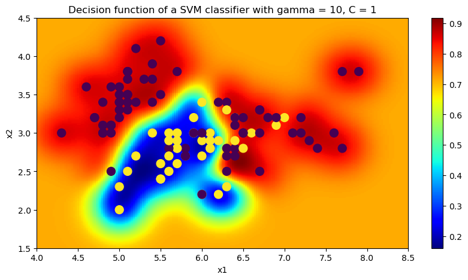

The goal of this lab is to introduce you to techniques for evaluating your trained models. The motivation is to be able to select the model that has the best (expected) out-of-sample prediction and to assess(Einschätzung) the quality of the model.
1. Model Selection in a holdout setting
We will work with the Iris data set. The iris data set consists out of \(4\) features (sepal length, sepal width, petal length, petal width) of three kinds of flowers in the iris family: iris setosa, iris versicolor, iris virginica. Our version of the data set has 150 data points with 50 for each class.
# Load the data%matplotlib inlineimport matplotlib.pyplot as pltfrom sklearn.datasets import load_irisiris = load_iris()print('Loaded {} data points'.format(len(iris.data)))X, y = iris.data, iris.targetprint('Class labels: {}'.format(list(zip(range(3), iris.target_names))))
Loaded 150 data points
Class labels: [(0, 'setosa'), (1, 'versicolor'), (2, 'virginica')]
We try to classify the iris versicolor with the help of the first two features.
We now train a SVM(Support vector machine) classifier on the training data and plot its decision boundary.
from sklearn.svm import SVCclf_svm = SVC(gamma=10, C=1, probability=True)clf_svm.fit(X_train, y_train)fig = plt.figure(figsize=(10, 5))ax = fig.add_subplot(111)show_decision_function(clf_svm, ax)plt.xlabel("x1")plt.ylabel("x2")#plt.legend()ax.set_title('Decision function of a SVM classifier with gamma = 10, C = 1');

Exercise 1.1 (Performance measures)
Classify the test data and evaluate the classification performance of the trained model SVM(Support vector machine) = clf_svm using the scikit-learnmetrics package.
It is intuitively the ability of the classifier to find all the positive samples. The best value is 1 and the worst value is 0.
The F-score\({\color{CornflowerBlue}F}_{\alpha=1}\) score can be interpreted as a harmonic mean of the precision and recall, where an \({\color{CornflowerBlue}F}_{\alpha=1}\) score reaches its best value at 1 and worst score at 0. The relative contribution of precision and recall to the \({\color{CornflowerBlue}F}_{\alpha=1}\) score are equal. The formula for the \({\color{CornflowerBlue}F}_{\alpha=1}\) score is:
IndexError: too many indices for array: array is 1-dimensional, but 2 were indexed
Exercise 1.2 (ROC curve)
To further evaluate the model, we want to plot a ROC (Receiver operating characteristic) curve and look at the AUC (area under the curve) value. Therefore, we provide a functionplot_roc_curves that accepts increasing false positive rates fpr\(= n_{\mathrm{FP}}\) and true positive rates tpr\(= n_{\mathrm{TP}}\) and plots the curve for you.
Please calculate the false and true positive rates $ n_{}, n_{}$ of the classifierclf_svm on the test data X_test and draw the ROC curve by executing the functionplot_roc_curves. What does the ROC and AUC tell us about the classifier’s performance?
Train four more SVM models on the training data by varying the regularization parameter \(C\) (the gamma parameter can be set to 10 again). Put the models into a list clfs using the append method. You can add a name to each classifier by setting clf.name = "some description" to keep track of the configuration.
clfs = []##################### INSERT CODE HERE #####################
Let’s have a look at the decision functions of the four classifiers…
# visualize the decision functions of the four different classifiersfig, axes = plt.subplots(2, 2, figsize=(20, 10))for clf, ax inzip(clfs, axes.ravel()): show_decision_function(clf, ax) ax.set_title(clf.name)
Many models have hyperparameters, parameters that can’t directly be estimated from the data. They have to be manually tuned by the practioner, because there is no analytical formula available to calculate an appropriate value. One example is the regularization parameter \(C\) in SVMs.
Exercise 2.1 (Nested cross-validation)
Train a SVM classifier for the detection of iris versicolor again, but this time with a proper tuning of the regularization parameter \(C\) (you may set the gamma parameter to 10 again). Select a reasonable range of parameter values for \(C\) and implement a nested cross-validation (as shown on the slides) by yourself.
You can use the following helper function that creates a list of masks. Each mask can be used as an index set to select the test samples. The function accepts the number of samples num_samples in the dataset and the desired number of folds k as input parameters. Since the data is sorted by the labels the k-fold CV will likely have trouble with class imbalances in the some cases. So you should randomly shuffle the data before applying the masks.
# helper function to create k-fold train-test-splitsdef create_kfold_mask(num_samples, k): masks = [] fold_size = num_samples / kfor i inrange(k): mask = np.zeros(num_samples, dtype=bool) mask[i*int(fold_size):(i+1)*int(fold_size)] =True masks.append(mask)return masks# visualization of the splits created by 'create_kfold_mask'masks = create_kfold_mask(150, 10)plt.matshow(masks)
##################### INSERT CODE HERE #####################